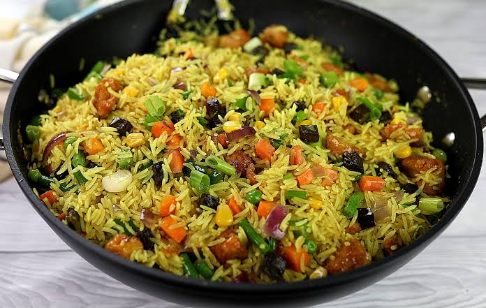

Home
Fried Rice Recipe

Description
Fried rice is a versatile and flavorful dish that can be made with leftover rice and a variety of ingredients.
It's a great way to use up leftovers and create a delicious meal!
Ingredients:
- 2 cups cooked rice (preferably cold)
- 2 tablespoons vegetable oil
- 1 small onion, diced
- 2 cloves garlic, minced
- 1 cup mixed vegetables (peas, carrots, corn)
- 2 eggs, beaten
- 3 tablespoons soy sauce
- Salt and pepper to taste
- Optional: cooked chicken, shrimp, or tofu for added protein
Steps
- Heat the vegetable oil in a large skillet or wok over medium-high heat.
- Add the diced onion and minced garlic, and cook until fragrant.
- Add the mixed vegetables and cook for a few minutes until tender.
- Push the vegetables to one side of the skillet and pour the beaten eggs into the empty space. Scramble the eggs until fully cooked.
- Add the cooked rice to the skillet and stir to combine with the vegetables and eggs.
- Pour in the soy sauce and season with salt and pepper to taste.
- Stir everything together until well combined and heated through.
- Serve hot and enjoy!